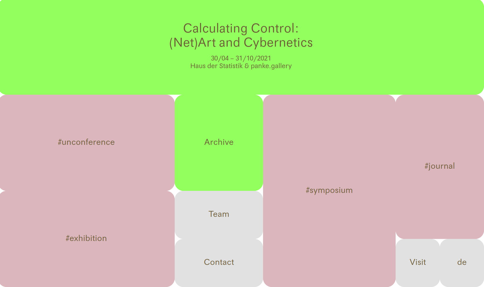
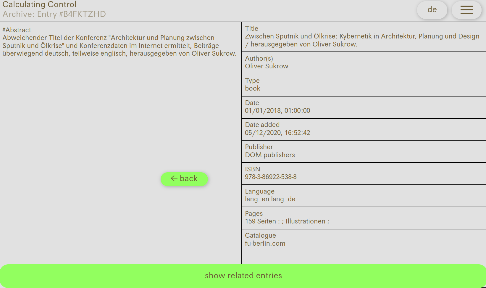
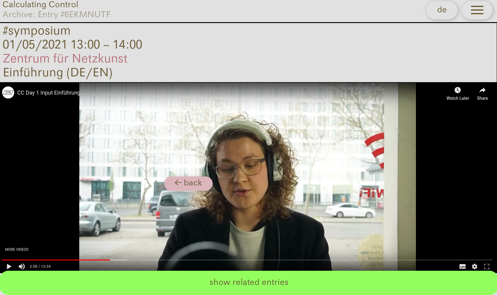
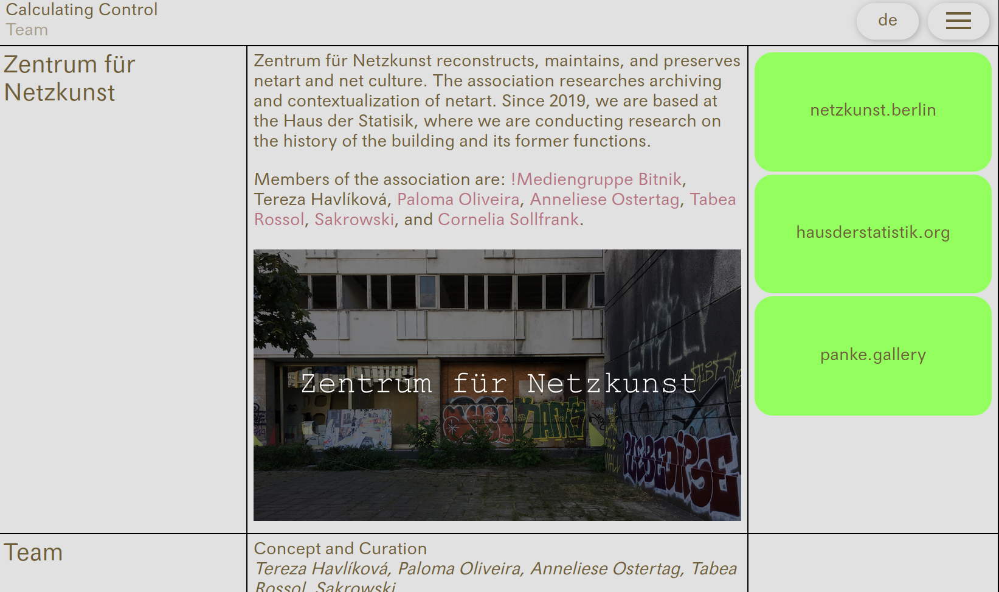

Calculating Control
I developed the web application for Calculating Control: (NetArt and Cybernetics) exhibition by the Berlin-based Zentrum für Netzkunst. The Vue-based single-page application was designed by Anna Lorenz and consisted of a living archive of research materials collected by the ZfN members. The collective uses a popular research tool called Zotero to record the research notes and references. I was able to use Zotero as a kind of database/backend API for the website, mirroring the research process as it happened.
The events and informational content of the website are also stored in Zotero, and all text is available in German and English. Live streams of the events were published on the website, too.
 